Something that looks impressive, tastes genuinely good, and doesn't require six hours of baking is exactly why themed dessert boards have quietly become the move for parties, family nights, and every "I should probably bring something" moment in between.
The first dessert board doesn't have to be perfect. Cookies, brownies, and chocolate thrown on a wooden board with a little confidence go a surprisingly long way. Dessert boards were never really about precision. They're about theme, balance, and committing to the bit.
Fourteen themes are laid out below, running from an international spread all the way down to a classic chocolate board, so there's a reasonable starting point whether the crowd is adventurous or firmly team chocolate.

Planning One Without the Stress
Pick the occasion first. A kids' birthday board looks nothing like a bridal shower board, and fighting that instinct never works out. Figuring out who's eating it, whether the mood is casual or fancy, and whether it should feel playful or polished makes half the remaining decisions disappear on their own.
From there, choose one hero dessert, a frosted cake, decorated cupcakes, chocolate-dipped strawberries, a showstopper pie, and build everything else around it.
Two mistakes are worth avoiding from the start: overcrowding the board, which just makes people hesitant to grab anything (leave breathing room; empty space actually makes desserts look more tempting), and forgetting dietary options, since a gorgeous board half the guests can't eat isn't actually a win. A gluten-free option, a nut-free dessert, and plenty of fruit-based sweets cover most of it.
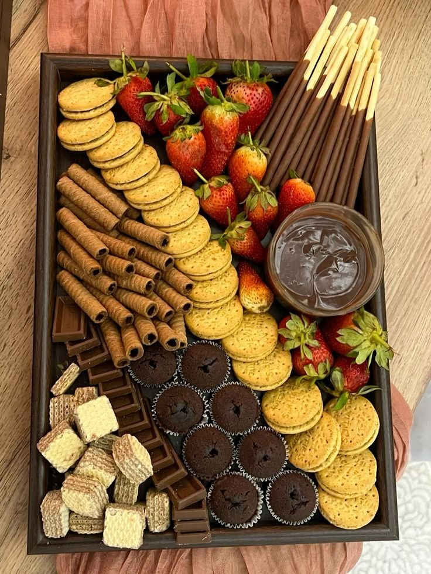
Why a Theme Changes Everything
Food genuinely tastes better when it looks put together, and that's not imagination. A theme gives a dessert board real structure, and structure is what makes the whole thing feel elevated instead of thrown together.
A real theme shows up everywhere on the board, not just in one fancy centerpiece dessert. Consistency matters more than quantity: aim for a tight, intentional mix built around one flavor profile, a repeating color palette, and enough texture variety that nothing feels flat.
Balance matters just as much, something crunchy, something soft, something creamy, something fresh. Skip one of those categories and people notice, even if they can't quite say why.
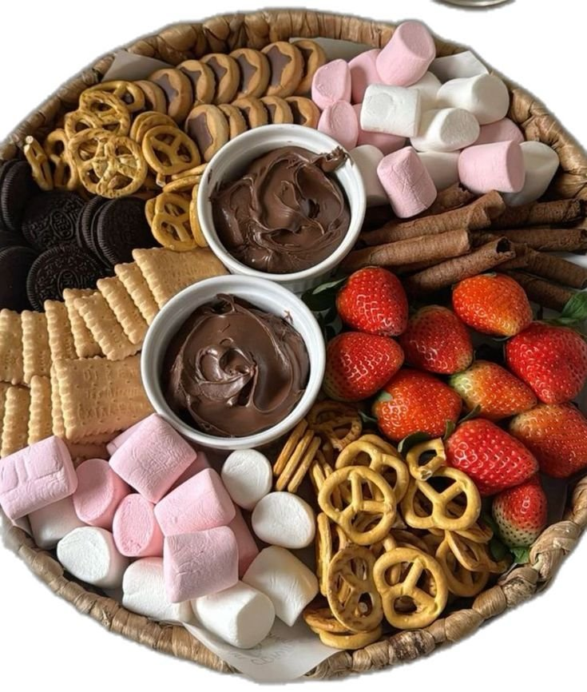
14 Themed Dessert Boards Worth Building
1. International Dessert Board
This theme feels adventurous without being intimidating, a genuinely good choice whenever the goal is something that doesn't look like every other board on Instagram.
Desserts from different regions work well here as long as every portion stays small: French macarons, Italian biscotti, Turkish delight, churro bites, and mini baklava pieces all work in miniature.
Labeling items with small cards, where it's manageable, adds something extra. People genuinely enjoy learning while they eat, and it makes a varied board like this one feel curated rather than random.
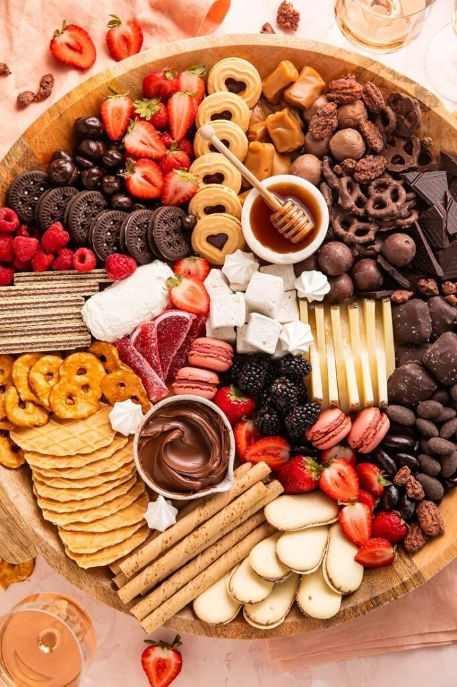
2. Breakfast-for-Dessert Board
This one feels a little rebellious in the best way. Who actually decided dessert has to wait until after dinner, anyway?
Mixing breakfast classics with a sweeter twist works well here: mini pancakes or waffles, small jars of maple syrup, fresh berries, chocolate spread, and cinnamon rolls or pastries.
Arranging everything so guests can build their own plate tends to work best. Interactive boards always end up feeling more fun than a pre-plated one.
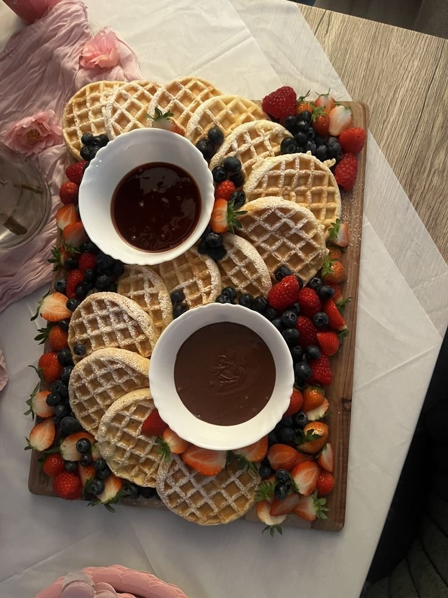
3. Chocolate and Caramel Board
This one feels indulgent and comforting at the same time, genuinely rich, but balanced enough that it doesn't tip into overwhelming.
Build the flavor layers with caramel brownies, chocolate cookies, pretzels for dipping, chocolate squares, and sea salt caramels.
Adding sea salt somewhere on the board is non-negotiable. It makes everything taste sharper and more complete.
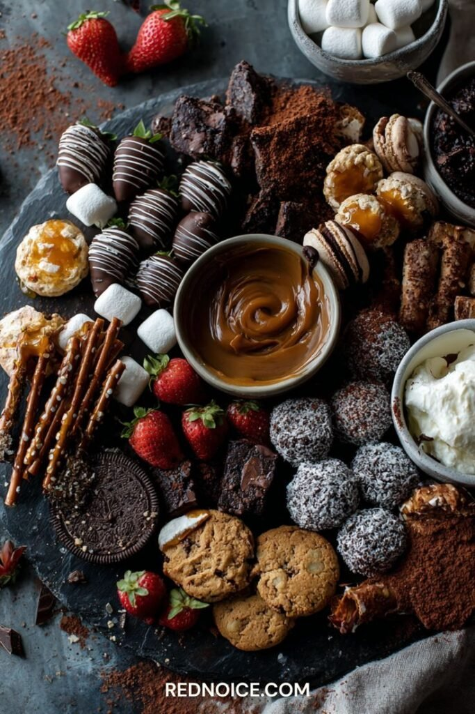
4. Movie Night Board
This one feels cozy, nostalgic, and reliably popular. People genuinely hover around it the way moths hover around a porch light.
Mixing sweet treats with movie-night classics works best: chocolate-covered popcorn, candy bars broken into chunks, brownie bites, mini donuts, and gummy candies.
Small paper cups or popcorn boxes add an interactive element people love, and as a bonus, fewer sticky fingers end up on the shared desserts.
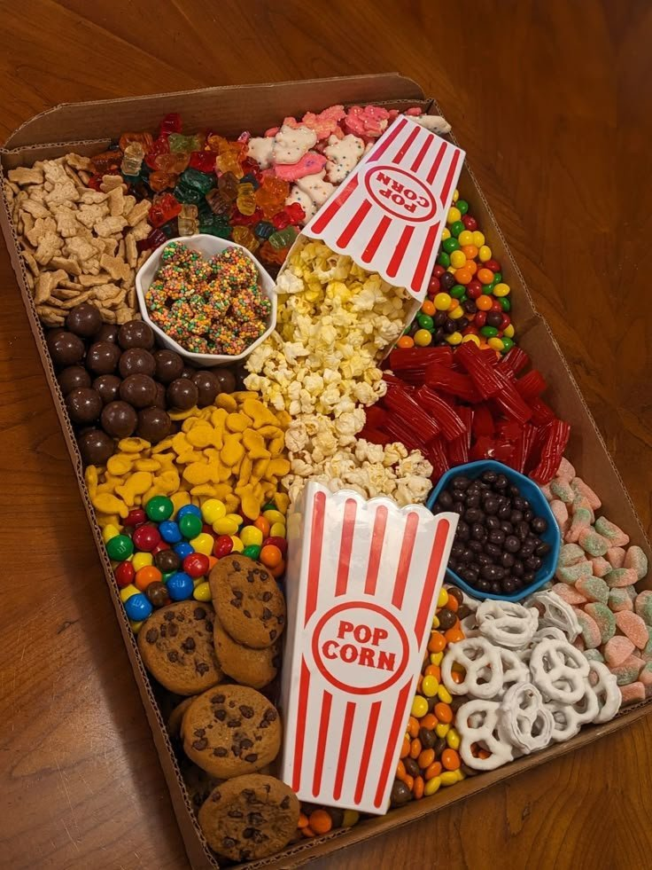
5. A Valentine's Sweetheart Board
Nothing says the occasion quite like heart shapes everywhere you look. This is the board to build for Valentine's Day, an engagement, or any celebration that wants a little romance built in.
Heart-shaped jam cookies, chocolate-dipped strawberries, pink and red macarons, conversation hearts, and fresh raspberries and cherries all lean into the theme without needing much explanation.
Serving pieces matter here too. Small heart-shaped bowls scattered across the board repeat the motif without saying a word.
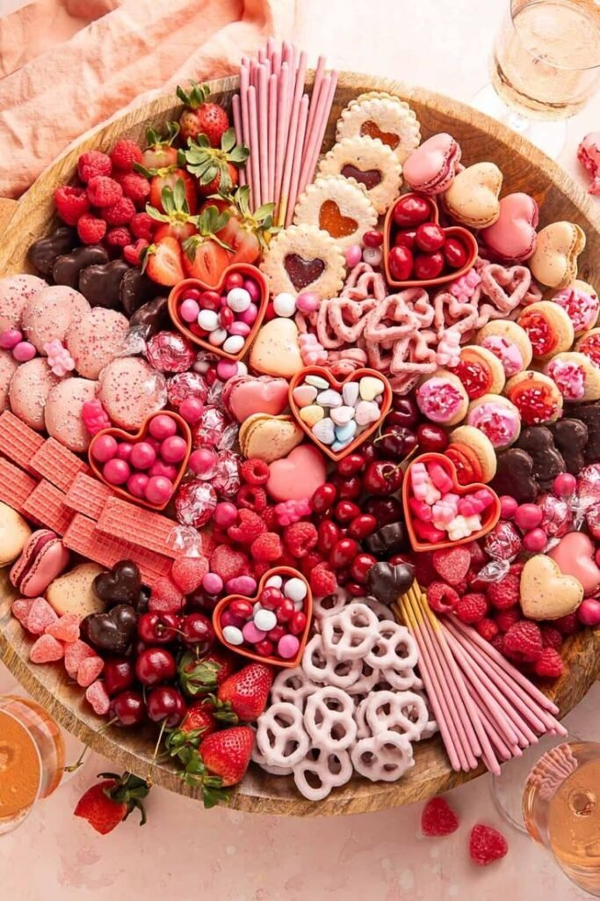
6. Summer Fruit Board
When it's hot outside, heavy desserts stop sounding appealing fast. This board solves that by leaning almost entirely into fresh, cold fruit instead.
Fresh berries, sliced stone fruit, a yogurt or honey dip, and a few light cookies keep the whole thing feeling bright rather than indulgent. Pairing the fruit with a little cheese and crackers stretches it even further.
Keep everything chilled until the very last minute. A melted, warm fruit board loses its entire appeal in about ten minutes flat.
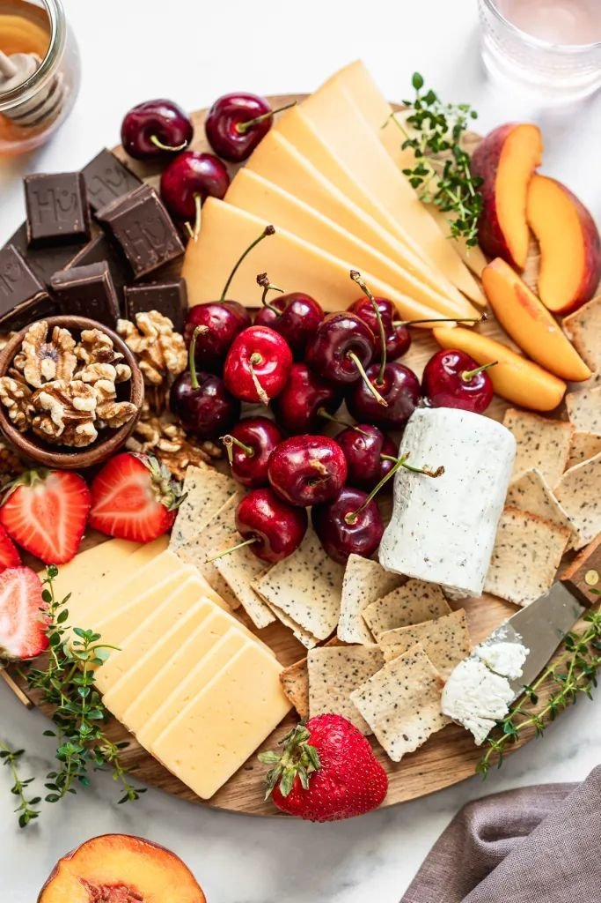
7. Pastel Party Board
This is the go-to for baby showers and spring gatherings. Soft colors make everything feel instantly cheerful without requiring much else from the rest of the room.
Macarons in soft pinks and golds, sugar cookies, mini frosted treats, and marshmallows all work together once the palette stays consistent.
Sticking to two or three soft shades at most keeps things curated. Go beyond that and the effect tips from curated into chaotic fast.
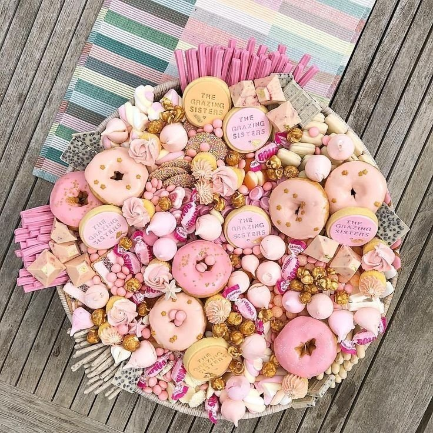
8. Elegant Black and Gold Board
This one reads as grown-up celebration instantly. It works beautifully for anniversaries, engagement parties, New Year's Eve, or any milestone that calls for something a little more polished.
Focusing on rich flavors and clean presentation works well: chocolate truffles, Ferrero Rocher, chocolate-covered pretzels, wafer bars, and a few decorative touches in gold foil.
A dark slate board or black tray makes gold accents genuinely pop. Negative space matters more here than anywhere else on this list, crowding it kills the luxury effect fast.
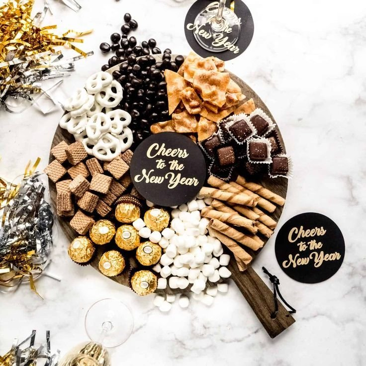
9. Holiday-Themed Board
Holiday dessert boards feel genuinely magical without much effort, mostly because the theme already exists on its own. The job is simply to lean into the season rather than fight it.
Starting with seasonal colors and flavors lets the board build itself from there, winter holidays lean chocolate, peppermint, and spice, with candy canes, chocolate kisses, and reindeer cookies covering the rest.
People expect certain flavors at certain times of year. Meeting that expectation, then adding one small unexpected detail on top, is really the entire strategy.
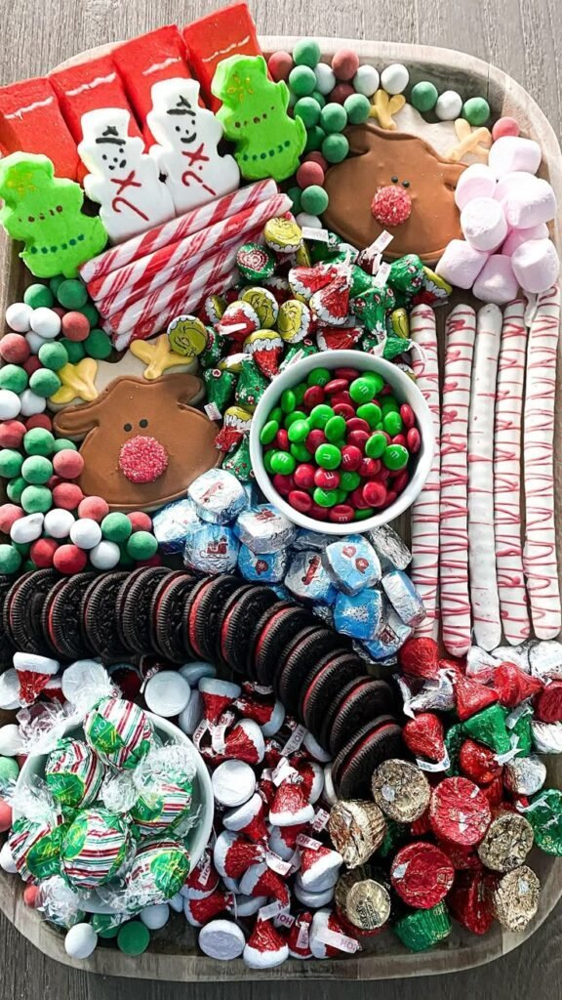
10. Kids Birthday Candy Explosion
Yes, it's chaotic. Yes, it's completely worth it. This board exists purely to generate joy, so lean all the way into the madness rather than fighting it.
Colorful candies and gummies, cupcakes with bold frosting, cake pops, marshmallows, and chocolate coins or fun-sized bars all belong here in generous quantity.
Organizing loosely by color zone keeps it from reading as a candy store explosion. Organized chaos is still chaos, just considerably prettier.
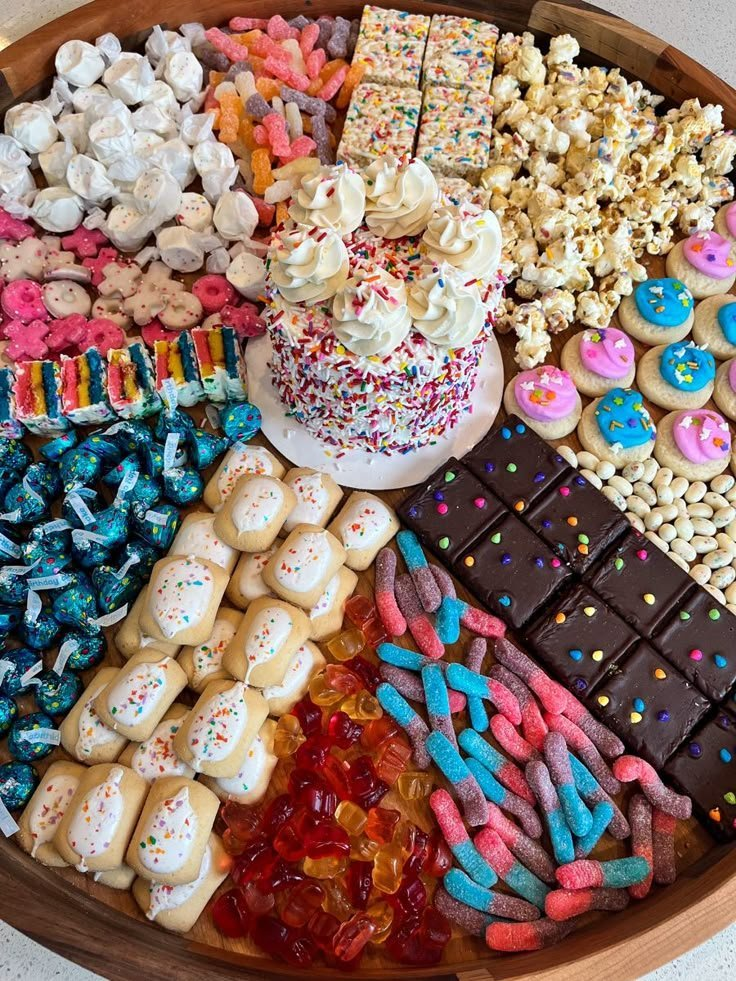
11. Minimalist White Dessert Board
This one surprises people. It looks effortless, but a true white-on-white board actually takes more intention than a colorful one, since there's nowhere for sloppy choices to hide.
Staying within soft neutrals and whites works best: vanilla cupcakes, white chocolate bark, powdered sugar donuts, coconut macaroons, and a pile of marshmallows.
White ceramic dishes and clear glass keep the whole thing feeling airy rather than flat. Texture ends up doing more visual work here than color ever could.
12. Pink Party Dessert Board
This one feels playful, joyful, and completely unapologetic about it. It's a natural fit for birthdays, bachelorette parties, or any just-because gathering that wants to feel a little celebratory.
Frosted pink sugar cookies, pink wafer bars, fresh strawberries and raspberries, and candy in assorted pink shades all build toward the same cheerful look.
Keeping the flavors genuinely balanced matters even as the color goes all-in. Pink looks cute, but flavor still has to carry its weight.
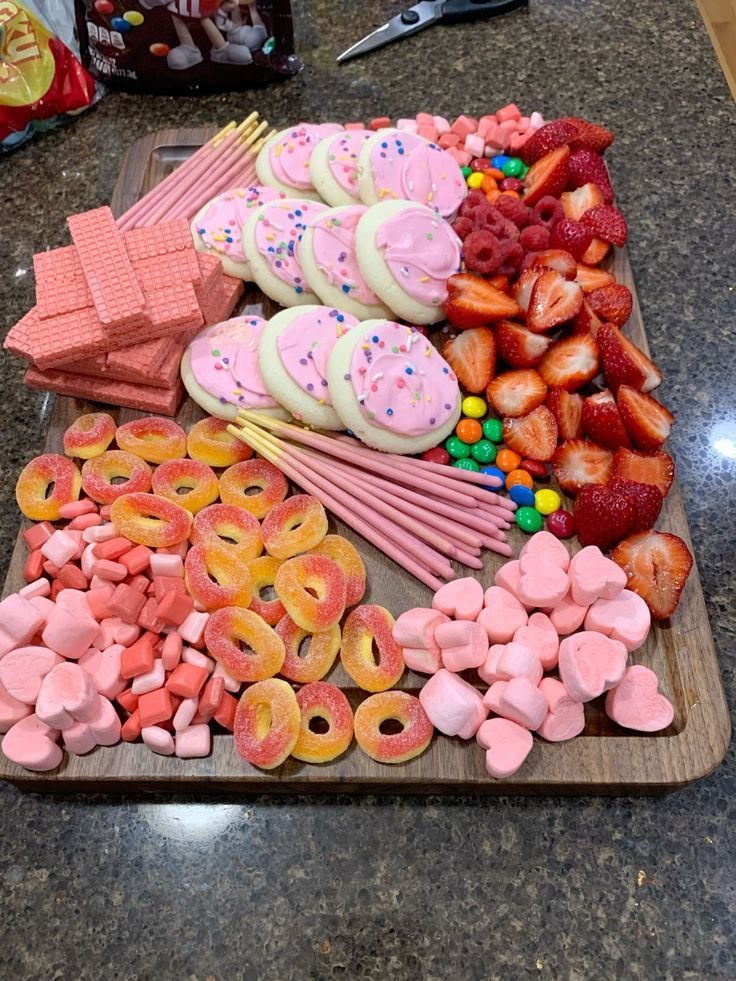
13. Fall-Inspired Dessert Board
Fall desserts feel cozy, nostalgic, and almost impossible to resist. This theme reliably gets more compliments than most others on this list.
Sticking to warm, familiar flavors works best: apple slices or apple turnovers, pumpkin bars or mini pies, cinnamon cookies, caramel dip, and candied pecans or walnuts.
Scattering a few small pumpkins or dried leaves around the board itself reinforces the theme without needing a single word of explanation.
14. Classic Chocolate Lover's Board
If chocolate had a fan club, this board would run it. It's the one theme that's never once drawn a complaint, and if a group exists that would complain about too much chocolate, they're simply not getting an invite.
Building it in layers of chocolate intensity works best: dark, milk, and white chocolate bars, brownies and chocolate cake squares, chocolate-dipped pretzels, mini chocolate chip cookies, and a few cocoa-dusted truffles.
Adding strawberries or raspberries somewhere cuts the richness. People genuinely appreciate the break, and it keeps the whole board from feeling like a single long sugar crash.
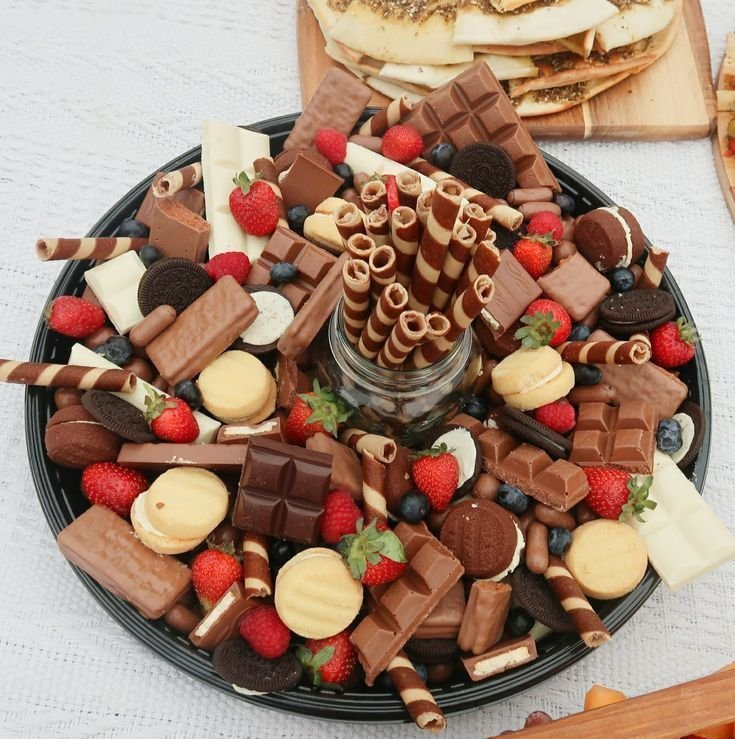
Final Thoughts
None of this requires perfection, just intention. Guests rave over boards built from grocery-store desserts and a little creativity all the time, the magic comes from how everything works together, not from how fancy any single item looks on its own.
Start from the center with the biggest item, use height to keep things from looking flat, and repeat a color or ingredient somewhere else on the board for cohesion.
Pick a theme that actually excites you, build around it, leave some breathing room, and don't overthink the rest. Dessert should feel joyful, and if someone goes back for seconds, the board did its job.
The next time someone asks what to bring, skip the stress spiral. Grab a board, pick a theme, and let the arrangement do the heavy lifting instead of a trip to the bakery.